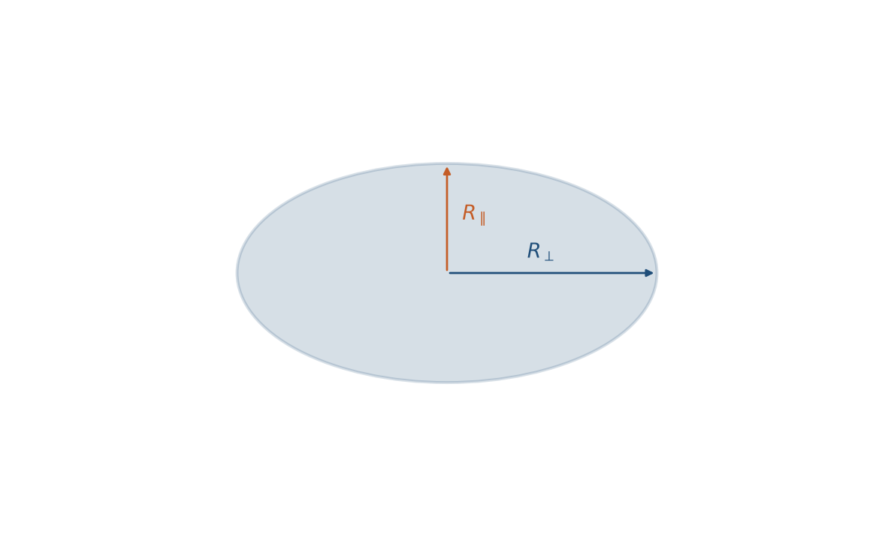
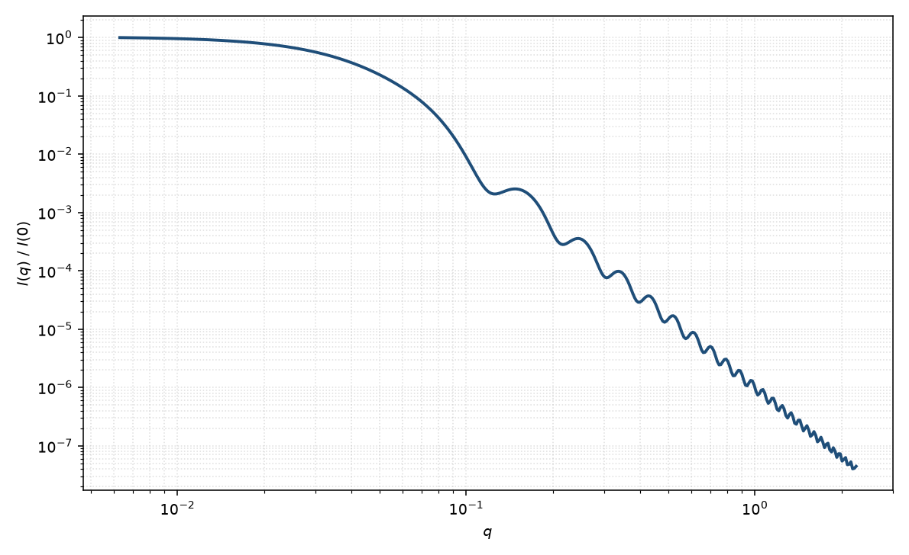

椭球
ellipsoid
适用场景
当粒子可视为均匀散射长度密度的旋转椭球（两个半轴相等、第三个不同）时，取向平均椭球形式因子是球与棒/盘之间的连续过渡。典型对象包括：略扁或略长的胶束、变形乳液滴、以及电镜显示轴比有限的无机纳米颗粒。
曲线判据：轴比 $\varepsilon=R_\parallel/R_\perp$ 接近 1 时接近均匀球的振荡；$\varepsilon\gg 1$（长球）中间区趋近 $q^{-1}$；$\varepsilon\ll 1$（扁球）趋近 $q^{-2}$。粉末平均会抹浅球的极小。明显三轴不等、核壳分层或截面呈椭圆柱时，应改用相应变体。
稀溶液只拟合 $P(q)$。二维各向异性图案需要取向分布，而不是只用一维粉末平均。
物理图像
旋转椭球沿某一取向的振幅等于半径为 $R_{\mathrm{eff}}(\alpha)$ 的均匀球振幅，其中 $\alpha$ 是对称轴与 $\mathbf{q}$ 的夹角。Guinier 给出对 $\alpha$ 的取向平均；$P(0)=1$。回转半径 $R_g^2=(2R_\perp^2+R_\parallel^2)/5$。
长径比很大时，取向平均后的中间斜率接近有限圆柱；压扁时接近薄盘。轴比 $\to 1$ 回到 Rayleigh 球。磁场或剪切下须保留 $\theta,\phi$，粉末平均会丢掉弧向信息。
示意图


核心公式
令 $\Phi(x)=3(\sin x-x\cos x)/x^3$。有效半径
$$R_{\mathrm{eff}}(\alpha)=\sqrt{R_\perp^2\sin^2\alpha+R_\parallel^2\cos^2\alpha}.$$一维粉末平均
$$P(q)=\int_0^{\pi/2}\Phi^2\bigl(q R_{\mathrm{eff}}(\alpha)\bigr)\sin\alpha\,\mathrm{d}\alpha.$$体积 $V=\frac{4}{3}\pi R_\perp^2 R_\parallel$。稀释观测强度常写 $I(q)=\mathrm{scale}\cdot P(q)+B$。
参数表
| 参数 | 符号 | 含义 | 单位 | 典型范围 |
|---|---|---|---|---|
| 赤道半径 | $R_\perp$ | 垂直于旋转轴的半轴 | Å 或 nm | 10–500 Å |
| 极半径 | $R_\parallel$ | 沿旋转轴的半轴 | Å 或 nm | 10–2000 Å |
| 轴比 | $\varepsilon$ | $R_\parallel/R_\perp$；$>1$ 长球，$<1$ 扁球 | 无量纲 | 0.2–8 |
| 极角 / 方位角 | $\theta,\phi$ | 对称轴相对光束的取向（二维） | 度 | 由取向分布约束 |
| 标度 / 本底 | $\mathrm{scale}$, $B$ | 前置因子与常数本底 | 与强度单位一致 | 实验相关 |
| 衬度 | $\Delta\rho$ | 均匀椭球相对溶剂的 SLD 差 | Å$^{-2}$ | 由组成计算 |
拟合注意
取向：一维数据默认粉末平均，不能单独分辨 $\theta$ 与 $\phi$。二维各向异性须拟合取向分布宽度；把弧向调制误读成轴比，是常见错误。
多分散：尺寸分布与轴比都会抹浅振荡。一维曲线上两者高度相关；有电镜轴比或二维数据时再放开 $\varepsilon$。报告均值须声明加权方式。
磁性：核磁 SLD 与核（核散射）SLD 是不同通道。均匀磁化椭球的磁形式因子仍是同一几何，但磁半轴、死层不必与核半轴相同；勿把磁各向异性误读成几何轴比。
可辨识性：仅有低 $q$ Guinier 时，$R_\perp$、$R_\parallel$ 与多分散强相关。要分开两半轴，需要看到中间斜率以及至少一组振荡，或有独立形貌信息。
相近模型
参考文献
- Guinier, A.; Fournet, G. Small-Angle Scattering of X-rays. Wiley: New York, 1955.
- Feigin, L. A.; Svergun, D. I. Structure Analysis by Small-Angle X-ray and Neutron Scattering. Plenum: New York, 1987.